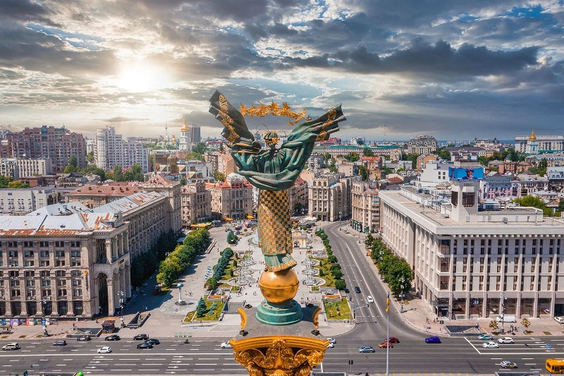

Київ — столиця України, одне з найдавніших і найбільших міст держави. У ньому проживає приблизно 2,9 мільйона людей, що робить його найнаселенішим містом країни. Київ розташований у північній частині центральної України, на обох берегах величної річки Дніпро.
Площа міста становить близько 840 квадратних кілометрів — це робить Київ дуже просторим. Тут можна побачити сучасні висотки, затишні старі двори та багато зелених зон — парків, скверів і ботанічних садів. Однією з найвідоміших вулиць є Хрещатик, де полюбляють прогулюватися і місцеві жителі, і туристи. Також місто славиться своїми пам’ятками: Софійським собором, Києво-Печерською лаврою, Золотими воротами та багатьма іншими.
Київ — не лише адміністративний центр, а й важливе осереддя української культури, освіти та бізнесу. У місті працюють численні університети, театри, музеї й галереї. Попри швидкий ритм життя, тут легко знайти місця для відпочинку — біля води, у парках або на тихих мальовничих вулицях.
